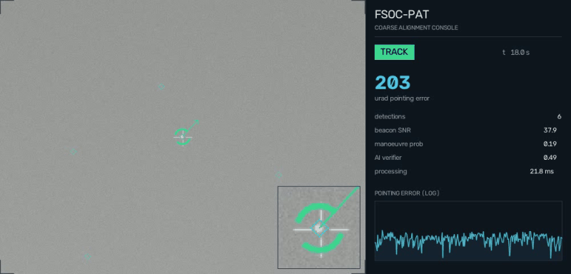
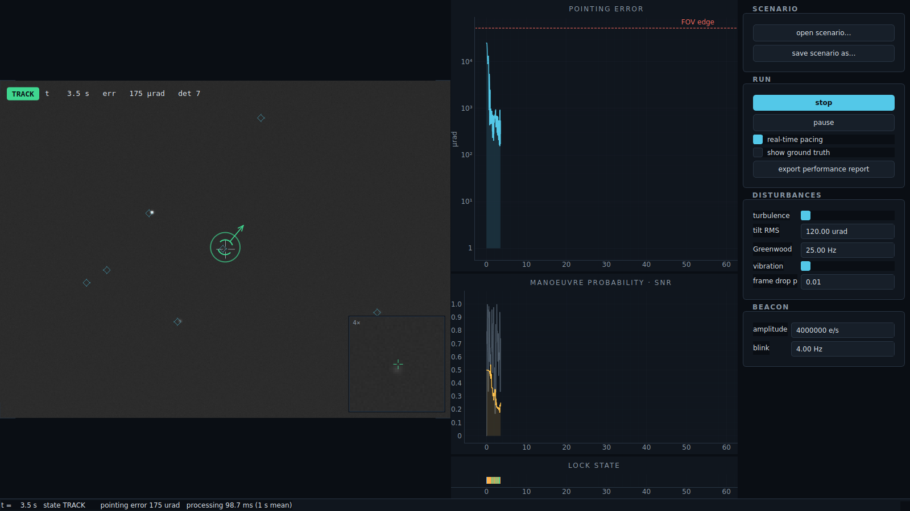
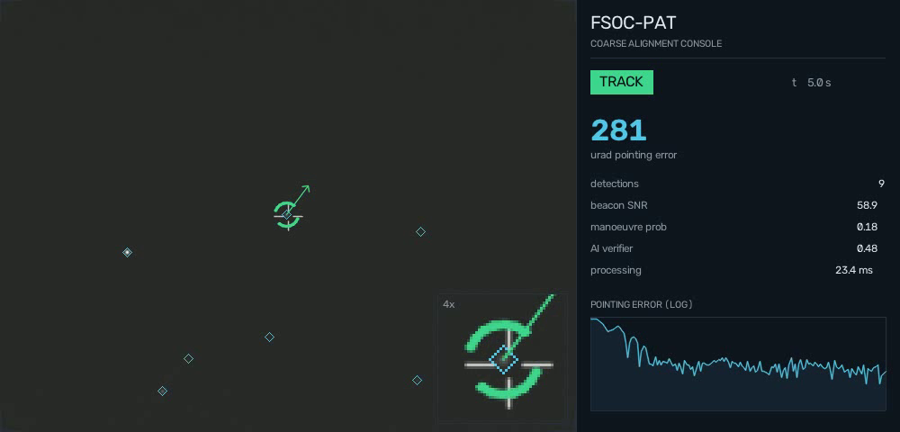

The problem
Free-space optical links carry gigabit data on a laser beam so narrow that a tiny pointing error kills the connection. Before a fine steering mirror can hold micro-radians, a coarse alignment stage must find the remote terminal's beacon and keep it inside a camera's field of view — through atmospheric turbulence, platform vibration, and a sky full of look-alike lights. ISRO's problem statement asks for this entire stage in software, because developing it on real optics is prohibitively expensive.
Our system
A physics-honest simulator (turbulence with correct time constants, aliased vibration, sensor noise, real ISS orbits via SGP4) closed against an AI-assisted tracker: CFAR point-target detection, blink-signature identification that stars and decoys cannot pass, an IMM Kalman filter, and a Smith-predictor control loop. Scored only against ground truth it cannot see.

The operator console — live camera view with reticle and magnifier, pointing-error trace, manoeuvre probability, lock-state strip, live-editable disturbances.

The tracker holding a satellite pass at 281 µrad with the AI verifier active — every number on screen is measured in real time.
Why it wins
Already built, honestly measured
73 automated tests, six validated scenarios, a 64-run randomised Monte-Carlo campaign (100% acquisition, zero wrong locks), auto-generated performance reports, standalone app.
Never fooled
The beacon is identified by its modulation signature — a hard gate, not a weighted vote. A star scores zero. Wrong-target locks across every test we ran: zero.
Real physics, real orbits
Greenwood-correlated turbulence, aliased platform resonances, shot/read noise, command latency — and genuine ISS passes propagated with SGP4.
The number that matters
On a tracked ISS pass, coarse + modelled fine stage closes the optical link 99.3% of the time vs 14.7% without — measured, not asserted.
Team ZeroDrift
Aryan Singh (lead) · Pranshu Mishra · Aashna Verma · Vivek Rajput · Palak Uikey · Shivanand Sahu — Jabalpur Engineering College. Mentor: Dr. Jitendra Singh Thakur (HOD, CSE).